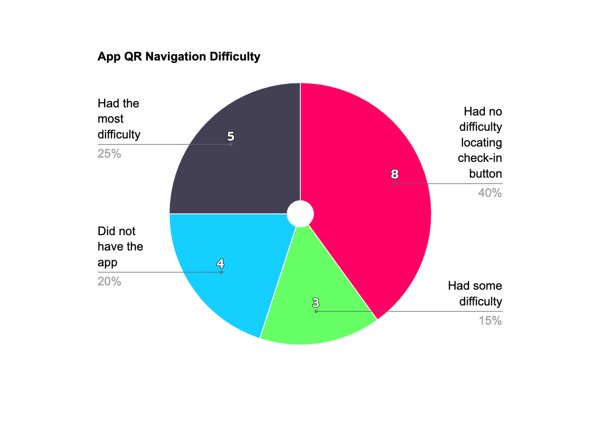
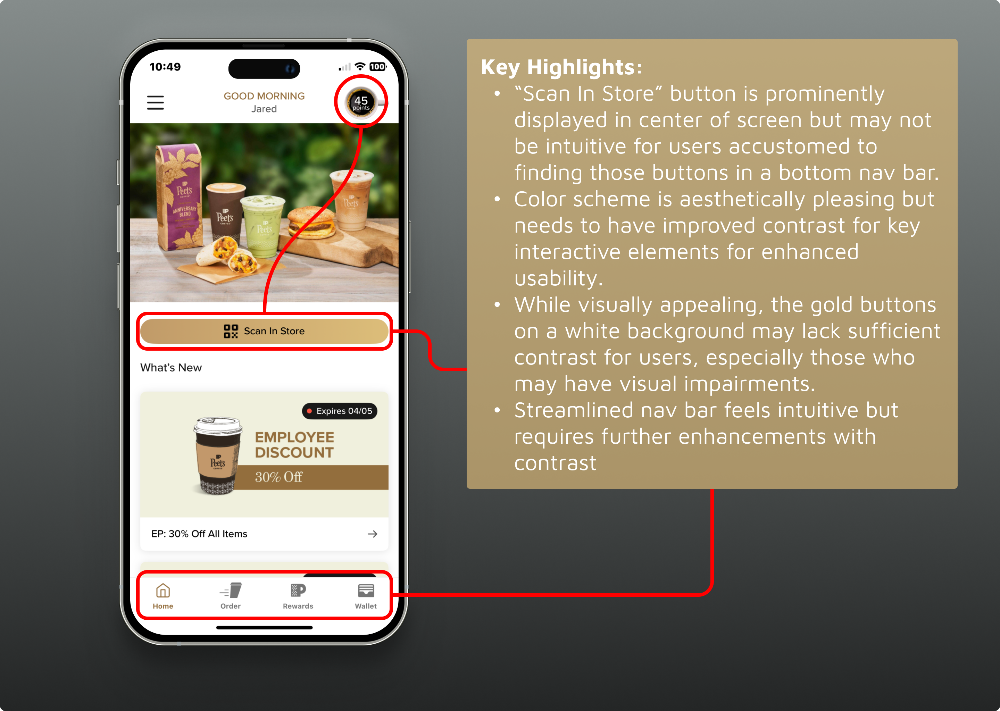

Peet's Coffee Mobile App
How a Small Improvement Streamlined a Core Function for Increased Usability

"How do I check in?" "Where's the scan button?"
Overview
Working in a coffee shop offers valuable insights beyond enjoying excellent coffee. It provides the unique opportunity to receive first-hand feedback from customers who express their frustrations with the Peet's Coffee mobile app. Additionally, I have access to our loyalty metrics through Power BI, giving me a comprehensive view of how many guests check-in with the app against the store's overall customer count. As a UX designer, I have taken these concerns to heart and used them to inform a redesign of the Peet's Coffee Mobile App, ensuring that customer feedback and data-driven insights shape the user experience.
The specific problem was in the drink customization interface, where users had to navigate through multiple screens to make simple modifications to their orders. This created unnecessary complexity for what should be a quick, intuitive process.
Problem
Many users find it difficult to locate the QR code for scanning within the app. Previous and current iterations prioritize visual elements and promotional content, which can obscure the QR code’s placement and make it less intuitive to find quickly. This difficulty in accessing a core functionality hampers the app’s usability, detracts from the seamless customer experience that the app aims to provide, and hinders our ability to increase loyalty metrics.
Solution
This case study explores the potential impact of our company's app redesign on loyalty metrics and overall user satisfaction. The redesign is informed by user feedback and aims to address their main concerns. It represents a step towards a more user-friendly, streamlined app and a more engaging user experience. The project's goal was to redesign the home screen of Peet’s Coffee’s mobile app to enhance user experience, streamline functionality, and simplify access to key features.
Sourcing the Problem
In order to understand the problem users were facing with the app, I took note of customers who verbally expressed difficulty locating the “scan to check in” button. However, this was not a streamlined or consistent approach as there was the variable of those same customers not coming back in. To counter this issue, I asked 20 random customers if they've had difficulty with the app, in terms of the check in process and navigation.
Here are those results:

Analyzing the past to enhance the future: Observations
One previous version of the app excelled at creating a visually appealing and brand-consistent interface. However, its design, featuring a central coffee cup graphic and promotional image, may have prioritized aesthetics over functionality. While the personalized greeting and intuitive navigation bar were strengths, the interface could have been streamlined to focus more on key user interactions, such as scanning for rewards and checking point statuses.

1
User Observations
Observed 15 customers using the app in-store to understand their natural ordering behavior and identify friction points.
2
Task Analysis
Analyzed the steps required to complete common customization tasks and measured completion times and success rates.
3
Feedback Collection
Collected direct feedback from users about their experience with the current customization interface.
Key Findings
My research revealed several critical issues with the current customization flow:
- Users took an average of 45 seconds to customize a drink (target: under 20 seconds)
- 23% of users abandoned their cart during the customization process
- Common customizations (size, milk type, sweetener) were buried in secondary screens
- Users frequently had to go back and forth between screens to make changes
- Mobile interface wasn't optimized for one-handed use
Solution Design
I redesigned the customization interface to prioritize the most common modifications and streamline the user experience. The solution focused on progressive disclosure and contextual customization.
Simplified Customization
Moved the most common customizations (size, milk, sweetener) to the main product screen, eliminating the need for multiple navigation steps.
Implemented a collapsible customization panel that expands when needed, keeping the interface clean while providing access to all options.
One-Handed Optimization
Redesigned the interface layout to accommodate one-handed mobile use, with primary actions positioned within easy thumb reach.
Increased touch targets and improved spacing to reduce accidental taps and improve usability on smaller screens.

Implementation Results
The redesigned customization interface was implemented and tested with real users, showing significant improvements across key metrics.
56%
Faster Task Completion
18s
Average Customization Time
12%
Cart Abandonment Rate
4.6/5
User Satisfaction
Design Process
The redesign process focused on iterative improvement and user validation at each step.
📝
Wireframing
Created low-fidelity wireframes to explore different layout options and information architecture approaches.
🎨
Prototyping
Built interactive prototypes to test the new customization flow and gather user feedback on the proposed solution.
🧪
User Testing
Conducted usability testing sessions to validate the design improvements and identify any remaining issues.
🚀
Implementation
Collaborated with the development team to implement the final design and ensure pixel-perfect execution.
Reflection
This project demonstrated how small, focused improvements can have a significant impact on user experience. By addressing a specific usability issue in the ordering flow, we were able to improve both user satisfaction and business metrics.
Key learnings included the importance of understanding user context (one-handed mobile use), the value of progressive disclosure in complex interfaces, and how user research can identify opportunities for meaningful improvements even in mature products.